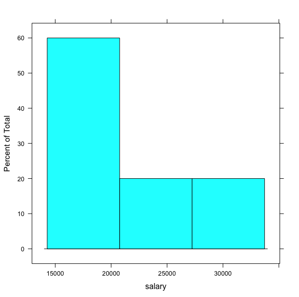

This tutorial provides a practical introduction to manipulating and visualizing data in R, covering essential topics such as accessing specific columns or rows, applying filters, aggregating data, and creating plots. By the end of this guide, you’ll be able to perform common data manipulation tasks and generate insightful visualizations using R.
Topics Covered
- Accessing specific columns or rows in a DataFrame.
- Filtering rows based on conditions.
- Generating group-wise statistics (e.g., salary statistics for different groups).
- Adding new columns to a DataFrame.
- Plotting data distributions.
- Visualizing group-based statistics.
Prerequisites
This guide assumes you have RStudio installed. If not, you can install it or access it online via RStudio Cloud.
Installing Required Packages
Open RStudio, and run the following commands to install the necessary packages:
install.packages('rio')
install.packages('dplyr')
install.packages('lattice')The above commands will install three packages rio, dplyr, and ggplot2. We will use these packages in our tutorials.
Loading a Dataset into RStudio
To get started, load a sample dataset containing simple attributes: name, age, salary, and expenses. Download the dataset here.
| name | age | salary | expenses |
|---|---|---|---|
| mac | 21 | 15000 | 600 |
| ravi | 25 | 18000 | 800 |
| david | 27 | 17000 | 600 |
| moorey | 43 | 33000 | 1200 |
| nolan | 33 | 24000 | 900 |
We can either use R-studio GUI or we can write code to load the dataset. So let’s say you have downloaded the dataset and saved it. You can write the following codes to load the dataset into R.
# load the package
library(rio)
# open dataset file
# Specify your dataset filename with complete path
data <– import('filename')Alternatively, you can use RStudio’s GUI to import the data.
Following is the demonstration of both ways of loading the dataset.
Accessing Specific Columns or Rows
So we have loaded the dataset into R and now we want to access two attributes name and salary using the dplyr package.
We will use the following syntax
select(data_object,attr_name,attr_name,..)
OR
data_object %>% select(attr_name,attr_name,..)Here, data_object is the object name you have used to load your dataset. You then specify the attribute name which you want to access.
In our case, we want to access name and salary. Therefore, we will specify these attributes in select().
library(dplyr)
library(rio)
# load dataset
dataset <- import('sample_data.csv')
# access name and salary attributes
dataset %>% select(name,salary)Following is our code from R-Studio.

Similarly, you can specify other attribute names which you want to access from your data. You can refer this link to get more information on the usage of select().
Now, we will look at row selection. Let’s say we want to fetch data of people whose salary is higher than 20000.
We will use the following syntax
filter(data_object,condition)
OR
data_object %>% filter(condition)To fetch our data, we will use the condition salary > 20000. The snapshot below shows the result.

You can refer here for more information on filter() function. Following are some other examples.
Accessing the last row
slice_tail(data_object)Accessing the first row
slice_head(data_object)Accessing row with minimum value of an attribute (e.g., who has the minimum salary)
slice_min(data_object, attr_name)Accessing row with maximum value of an attribute (e.g., who has the maximum salary)
slice_max(data_object, attr_name)
How to create new attributes using attributes from the dataset?
We will take an example to understand this scenario. Let’s say we want to calculate the savings for each employee (from our salary dataset). So we want to have another attribute (saving) which will simply contain the amount of salary left after subtracting the expenses.
We will use mutate() function for this task. Following is the syntax
data_object %>% mutate(expr)
OR
mutate(data_object,expr)Here expr means the expression that will be used to generate a new attribute. In our case, the savings can be computed by subtracting expenses from salary. Therefore, expr is saving = salary - expenses.

Refer here for more detailed information on mutate() function.
How to generate group-wise statistics?
While analyzing the dataset, we are often interested in group-wise statistics. For example, what is the average salary for younger and older people or what is the difference in sleeping hours between males and females?
To answer these questions, we need to first group the dataset and then compute the required statistics.
For our dataset, we can have this question: what is the average salary of people who are younger and older than 30 years? So we will use group_by() and summarise() functions from dplyr package.
Following is the representation of how the processing needs to be done.
In R, the following is the syntax.
data_object %>% group_by(attribute_name_used_for_grouping or condition) %>% summarize(statistics_you_need)Here first we need to specify the attribute that will be used for grouping and then we will specify what summary stats we need. Following are the options for summary stats
- mean(), median()
- sd(), IQR()
- min(), max()
- n()
For more details refer this
Now, let’s find out the average salary of people who are younger and older than 30 years. So, here we need a condition for grouping. For example, if age < 30 then the employee belongs to group-1 otherwise he/she belongs to group-2. Then we need to specify the attribute name for computing the average.
Following is the illustration of finding the group-wise average.

Now, we will do the same using R. For grouping we will use group_by() function. Here we need to specify the condition. Then we will summarise using summarise() function. Here we need to specify the statistics (e.g., mean, standard deviation, count) and the attribute/s name that will be used to compute statistics.

Plotting the data
In this section, we will use lattice package from R to produce graphs. We will cover creating following graphs
- Bar chart
- Box plot
- Density plot
- Histogram
- Scatter plot
You can use the following syntax to create graphs using lattice package.
graph_type(formula,data=)Here, graph_type is the name of the graph which you want to plot. In the formula, you need to specify what you want to plot. For example, if you want to plot a salary attribute from our dataset, you can write it as ~salary. If you want to plot two attributes (e.g., age and salary) then you can either write age~salary or salary~age.
The following table shows the graph_type for each of the aforementioned graph
| graph_type | What it plots |
|---|---|
| barchart | bar chart |
| bwplot | boxplot |
| Densityplot | kernel density plot |
| histogram | histogram |
| xyplot | scatterplot matrix |
We will learn more about how to write these forms in our examples.
Let’s plot a histogram for the salary attribute from our dataset. For this, we will use
histogramgraph type. We will specify the name of the attribute~salary.dataset <- import(your_file_name_path) histogram(~salary,data=dataset)


Now, we will plot the scatterplot for age and salary. We will use xyplot.
# You already have your dataset loaded in the object dataset xyplot(age~salary,data=dataset)
Let’s plot a boxplot for the salary attribute.
bwplot(~salary,data=dataset )